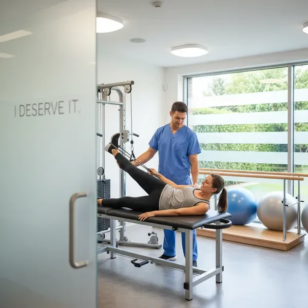
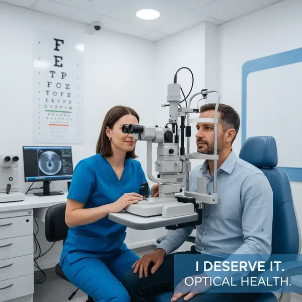

אחד השירותים המבוקשים ביותר שלנו הוא בדיקת זכאות לביטוח בריאות בתחום התרופות. רבים מאיתנו משלמים על תרופות מרשם מידי חודש, מבלי לדעת שמגיעים להם החזרים מביטוח בריאות פרטי. המערכת שלנו בודקת את הכיסוי שלך מול מאגר התרופות המאושרות ומציגה לך בדיוק כמה כסף אתה יכול לקבל בחזרה.
השירות כולל בדיקה של תרופות מרשם קבועות, תרופות חד-פעמיות, ותרופות יקרות במיוחד שדורשות אישור מיוחד. אנחנו מסבירים לך איך לבדוק זכאות בביטוח משלים לכל סוג של תרופה, כולל התהליך המדויק להגשת תביעה וקבלת ההחזר. מגיע לי עוזר לך להבין את הזכויות שלך ולממש אותן בפועל.
בדיקות רפואיות יכולות להיות יקרות, במיוחד כאשר מדובר בבדיקות מתקדמות כמו MRI, CT או בדיקות גנטיות. מגיע לי מציע בדיקת זכאות לביטוח בריאות מקיפה לכל סוגי הבדיקות הרפואיות. אנחנו בודקים את הפוליסה שלך מול מגוון רחב של בדיקות ומספקים לך מידע ברור על הכיסוי הביטוחי שלך.
השירות שלנו כולל בדיקה של בדיקות דם שגרתיות, בדיקות דימות מתקדמות, בדיקות גנטיות, בדיקות הריון ועוד. אנחנו מסבירים לך בדיוק אילו בדיקות מכוסות, מה הסכום המקסימלי להחזר, והאם נדרש אישור מוקדם מחברת הביטוח. כך תוכל לתכנן את הבדיקות הרפואיות שלך מראש ולדעת בדיוק כמה תצטרך לשלם מכיסך.
טיפולי שיניים הם אחד התחומים היקרים ביותר ברפואה, והרבה אנשים לא יודעים שהביטוח הפרטי שלהם מכסה חלק ניכר מהעלויות. מגיע לי מציע בדיקת זכאות לביטוח בריאות מפורטת בתחום הדנטלי, כולל טיפולי שורש, השתלות שיניים, יישור שיניים ועוד. אנחנו בודקים את הפוליסה שלך ומציגים לך את כל הזכויות בתחום השיניים.
השירות כולל מידע על כיסוי לטיפולים שגרתיים כמו ניקוי אבנית וסתימות, וגם טיפולים מתקדמים כמו כתרים, גשרים והשתלות. אנחנו מסבירים לך איך לבדוק זכאות בביטוח משלים לכל סוג של טיפול דנטלי, כולל המגבלות השנתיות והתנאים המיוחדים. מגיע לי עוזר לך למקסם את ההחזרים מביטוח בריאות פרטי בתחום השיניים ולחסוך אלפי שקלים בשנה.

רבים מאיתנו זקוקים לטיפולים פרא-רפואיים כמו פיזיותרפיה, דיקור סיני, רפואה משלימה ועוד. מגיע לי מציע בדיקת זכאות לביטוח בריאות מקיפה גם בתחום זה. אנחנו בודקים את הפוליסה שלך ומספקים לך מידע מפורט על הכיסוי הביטוחי לטיפולים פרא-רפואיים, כולל מספר הטיפולים המכוסים בשנה והסכום המקסימלי להחזר.
השירות שלנו כולל בדיקה של מגוון רחב של טיפולים: פיזיותרפיה, ריפוי בעיסוק, דיקור סיני, הומיאופתיה, נטורופתיה, אוסטאופתיה ועוד. אנחנו מסבירים לך איך לבדוק זכאות בביטוח משלים לכל סוג של טיפול, והאם נדרש אישור רפואי או הפניה מרופא. מגיע לי עוזר לך לקבל את הטיפולים שאתה צריך תוך מיקסום ההחזרים מביטוח בריאות פרטי.
אשפוז וניתוח הם מהאירועים היקרים ביותר מבחינה רפואית, ולכן חשוב במיוחד להכיר את הזכויות שלך. מגיע לי מציע בדיקת זכאות לביטוח בריאות מפורטת לאשפוזים וניתוחים, כולל בדיקה של כיסוי לחדר פרטי, ליווי רפואי, ניתוחים פרטיים ועוד. אנחנו בודקים את הפוליסה שלך ומספקים לך מידע ברור על הכיסוי הביטוחי במקרה של אשפוז.
השירות כולל מידע על כיסוי לאשפוז בבתי חולים פרטיים וציבוריים, ניתוחים אלקטיביים וחירום, חדר פרטי, ליווי רפואי, וטיפולים נלווים. אנחנו מסבירים לך איך לבדוק זכאות בביטוח משלים לכל סוג של אשפוז, והאם יש צורך באישור מוקדם מחברת הביטוח. מגיע לי עוזר לך להיות מוכן מראש ולדעת בדיוק מה מכוסה במקרה של אשפוז או ניתוח.

משקפיים ועדשות מגע הם הוצאה משמעותית, במיוחד עבור משפחות עם מספר ילדים. מגיע לי מציע בדיקת זכאות לביטוח בריאות מקיפה גם בתחום האופטיקה. אנחנו בודקים את הפוליסה שלך ומספקים לך מידע מפורט על הכיסוי הביטוחי למשקפיים, עדשות מגע, בדיקות ראייה וטיפולים אופטומטריים.
השירות כולל בדיקה של כיסוי למשקפי ראייה, משקפי שמש מרשם, עדשות מגע חד-פעמיות וקבועות, ובדיקות ראייה אצל אופטומטריסט. אנחנו מסבירים לך איך לבדוק זכאות בביטוח משלים לכל סוג של מוצר אופטי, כולל התדירות המותרת לרכישה והסכום המקסימלי להחזר. מגיע לי עוזר לך לחסוך כסף על משקפיים ועדשות מגע למשפחה כולה.
טיפולי פוריות והריון יכולים להיות יקרים מאוד, ורבים אינם מודעים לכך שחלק מהטיפולים מכוסים בביטוח הפרטי. מגיע לי מציע בדיקת זכאות לביטוח בריאות מפורטת בתחום הפוריות וההריון, כולל טיפולי הפריה חוץ גופית, בדיקות גנטיות, מעקבי הריון ועוד. אנחנו בודקים את הפוליסה שלך ומספקים לך מידע ברור על הכיסוי הביטוחי.
השירות כולל בדיקה של כיסוי לטיפולי פוריות, הפריה חוץ גופית (IVF), בדיקות גנטיות טרום הריון, מעקבי הריון, בדיקות אולטרסאונד, ובדיקות סקר גנטיות. אנחנו מסבירים לך איך לבדוק זכאות בביטוח משלים לכל סוג של טיפול, והאם יש מגבלות על מספר הניסיונות או הטיפולים המכוסים. מגיע לי עוזר לך להבין את הזכויות שלך ולתכנן את המסע להורות בצורה חכמה כלכלית.